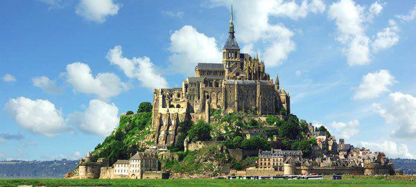

Le Mont Saint-Michel
Le Mont Saint Michel fait partie des sites touristiques les plus importants en France. Il est sur la liste du Patrimoine mondial de l’UNESCO depuis 1979.
Le Mont-Saint Michel est au milieu d’une baie de 500 kilomètres carrés située au sud-ouest du département de la Manche en Normandie. Cette baie est célèbre pour ses grandes marées. En effet, les marées de cette baie sont les plus grandes marées d’Europe : la mer disparait sur une dizaine de kilomètres puis revient à la vitesse d’un cheval au galop.
L’abbaye du Mont Saint-Michel est un lieu de pèlerinage. Son architecture religieuse et militaire date de l’époque médiévale. On peut admirer la baie à partir de la terrasse ouest. À l’abbaye, on peut faire des visites guidées, voir des animations et assister à des concerts toute l’année.
Aux alentours du Mont Saint-Michel, il y a les plages et la vieille ville de Granville , les îles Chausay très appréciées pour les excursions, et le musée des manuscrits à Avranches.
Les spécialités locales sont nombreuses. Il faut en goûter absolument au moins trois :
l’omelette de la mère Poulard
l’agneau de prés-salés
les crêpes
Dormir au Mont Saint-Michel est possible, l’hôtel Saint-Pierre (près de l’abbaye) propose des chambres doubles allant de 198 à 255 €, le petit déjeuner est à partir de 17 €. En s’éloignant un peu, on trouve des chambres à partir de 63 € par personne (petit déjeuner compris ) à l’hôtel Mercure situé à deux kilomètres du Mont Saint-Michel.
On peut se rendre au Mont Saint-Michel depuis Paris. Pour cela, il faut prendre le TGV jusqu’à Rennes, puis la ligne express en autocar entre Rennes et le Mont Saint-Michel.

(Recuerda que las respuestas deben escribirse en francés)
Envoyer
Retour